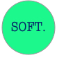
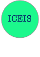

2017
2015

Yutian Tang, and Hareton Leung, "Feature Mining for Product Line Construction".
In Proceedings of The First International Conference on Advances and Trends in Software Engineering (SOFTENG), 2015 Yutian Tang, Hareton Leung(paper)

Yutian Tang, and Hareton Leung, "A Top-down Feature Mining Framework for Software Product Line".
In Proceedings of International Conference on Enterprise Information System (ICEIS), 2015.Yutian Tang, Hareton Leung(paper)